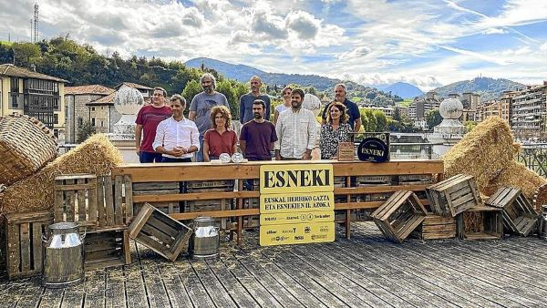
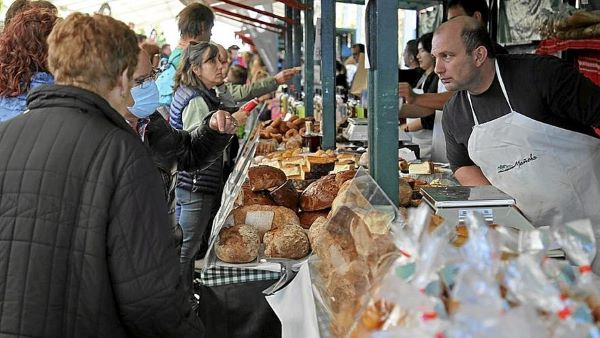

Aqui teneis fecha y lugar en noviembre del sector mas importantes de Guipuzcoa
| FERIA | FECHA | LUGAR | DESCRIPCION | + INFO |
|---|---|---|---|---|
| ESNEKI | 3 Y 4 DE NOVIEMBRE | TOLOSA | PRODUCTOS LACTEOS | 
(fuente:www.noticiasdeguiguipuzcoa.eus) |
| FERIA CHOCOLATE,DULCE Y ARTESANIA | 4 Y 5 NOVIEMBRE | ZAMUDIO | VENTA DE PRODUCTOS ARTESANOS,KM0 Y CAMPEONATO DE EUSKADI GANADO LIMUSIN |

(fuente:www.deia.eus) |